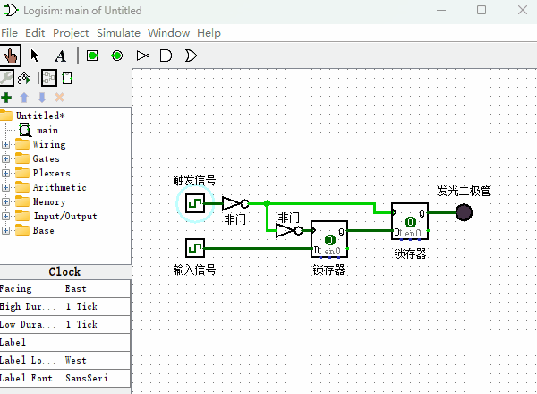
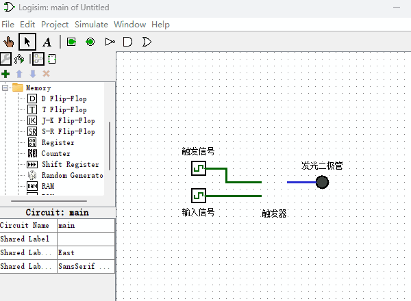

触发器
锁存器保存信号是通过“锁存信号端”的高低电平控制的，本节介绍的触发器则是通过“触发信号端”的高低电平变化来保存信号的。高低电平变化具体是什么意思呢？我们来先看一下触发器的电路原理图，如下图所示。

仔细观察上图演示动画，你会发现，只有“触发信号端”由0变成1的瞬间，输入信号才会通过并被保存下来。其它任何情况，输入信号都无法被传送的输出端。现在让我们来具体分析下为什么会是这样？
- 当“触发信号”为0或者1的稳定状态时，两个锁存器必然会有一个锁存器处于锁存状态，这会导致“输入信号”无法传达给右侧的二极管。
- 当“触发信号”由0变成1时，左侧的锁存器会把“输入信号”锁住，右侧的锁存器处于连通状态，右侧的锁存器相当于没有发挥任何作用，最终“输入信号”就被左侧的锁存器锁住并传送给发光二极管。
- 当“触发信号”由1变成0时候，这时候我们就要考虑信号传输过程的延时问题了。很明显，当“触发信号”变化的时候，右侧的“锁存器”应该先起作用，因为信号到达左侧的“锁存器”要经过更多的逻辑门（我们这里假设信号通过每个逻辑门的延时都是相同的，事实上Logisim模拟软件也是这么做的）。所以，当“触发信号”由1变成0时候，右侧“锁存器”会首先保存左侧“锁存器”之前的输出值，然后左侧的“锁存器”才变成连通状态。最终的结果就是，输入信号无法传送到发光二极管，之前被左侧“锁存器” 所保存的信号现在被保存到了右侧的“锁存器”，但最终输出到发光二极管的信号没有变化。
此处要动脑思考思考，如果你在看了上述分析后依然感到困惑，建议你把本书的演示例子下载到本机电脑，使用Logisim软件尝试放慢速度模拟并观察结果，这样有助于你理解“触发器”的工作原理。
最后，由于Logisim已经给我们提供了更方便的触发器元件，后面如果在Logisim软件里用到触发器的话，我就直接使用Logisim软件里内置的触发器了，它的使用方式如下图所示。
